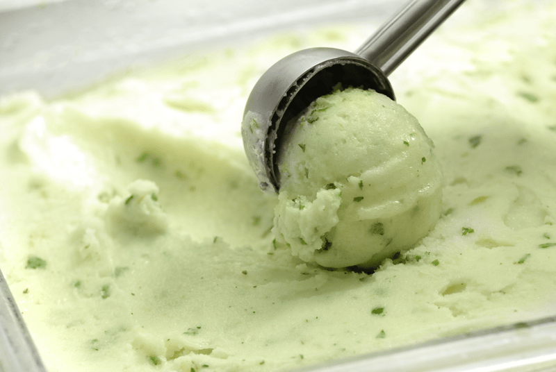
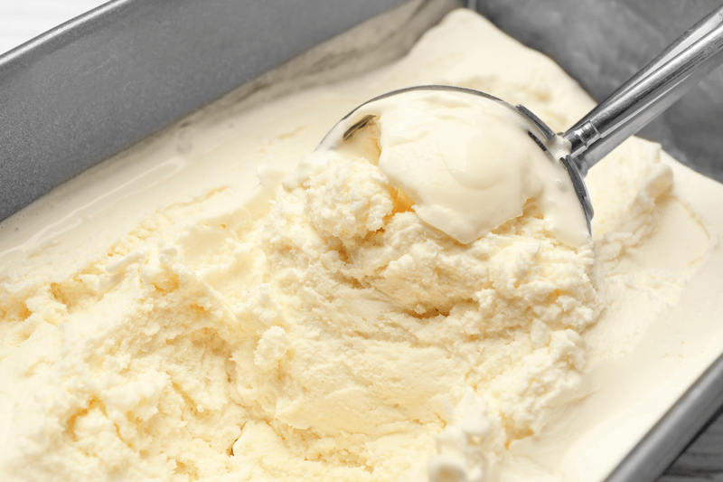
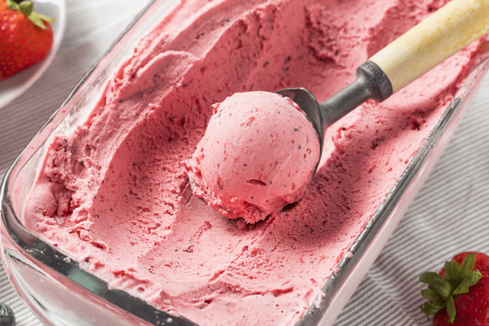

Ice Cream Machine Tips and Tricks
Even though using an ice cream machine is pretty straight forward, I have some tips and tricks to help make your experience and outcome better. Taking the time to experiment with recipes and methods is all about learning and mastering new techniques to get the most amazing and delicious final product.

Freeze the bowl
- The freezer bowl must be completely frozen before you begin your recipe.
- The length of time needed to reach the frozen state depends on how cold your freezer is.
- Store the freezer bowl in the freezer at all times so you can take it out any time for immediate use.
- In general, the freezing time is between 6 hours and 22 hours.
- To determine whether the bowl is completely frozen, shake it. If you do not hear liquid moving, the cooling liquid is frozen.
- Before freezing, wash and dry the bowl. Wrap it in a plastic bag to prevent freezer burn.
- I recommend that you place the freezer bowl in the back of your freezer where it is coldest.
- The bowl will begin to defrost once it has been removed from the freezer. Use it immediately after removing from freezer.
Prechill the Ice Cream Mixture
- The mix should be nice and chilled before adding it to the ice cream machine.
- By chilling the ice cream slurry and having the bowl frozen solid, it gives your machine a head start. It will freeze the mixture faster so it will spend much less time in the machine and the ice crystals will be smaller.
- I make most of my ice cream batters in the blender, so once I have all the ingredients blended, I slide the blender jar into the fridge or freezer (if pressed for time) until it is nice and cold. If you do put it in the freezer, set a timer, so you don’t forget about it.

Start the motor first
- When using an ice cream maker with a freezer bowl, it’s important to turn on the motor before pouring into the ice cream base. The bowl is so cold that the mixture will freeze immediately upon contact. You’ll want it to already be in motion so that the ice cream won’t freeze onto the bowl in a chunk.
- After about 20-40 minutes (machine depending), you will have creamy, soft ice cream. Most ice cream makers will bring your mixture to soft-scoop consistency, but you can pop it in the freezer for an hour or two to firm it up a bit.
Ice Cream Add-Ins
- Add-ins should be small, around the size of a chocolate chip so that the ice cream maker can incorporate them into the ice cream.
- Chill them thoroughly before adding them to the ice cream, and only add them a minute or two towards the end just enough to stir them in.
Avoid Overfilling the Ice Cream Maker
- Overfilling the machine will result in lower quality ice cream because the ice cream needs to aerate in the process. If the machine is overfilled, it will just spill out and make a sloppy mess.
- Do not fill the freezer bowl higher than 1/2″ from the top. The ingredients will increase in volume during the freezing process.
Don’t Run the Machine too Long
- Most mid-range ice cream machines have a 20-40 minutes cycle, but please look up your make and model to see how long they recommend the run cycle.
- If your machine doesn’t have a timer or doesn’t turn off automatically, set a timer to make sure you don’t forget about it. I recommend peeking on it every once in a while to watch the progress.
- If you over-turn the ice cream, it can great a dense, chewy texture.

Pour Ice Cream in a Long Pan
- Do not store ice cream in the freezer bowl as it will stick to the sides and may damage it.
- One of the simplest tricks about making irresistible ice cream is to store it in a long shallow container. The trick here is the long surface. It makes it easier to draw an ice cream scoop but also allows more even temperature at the bottom, the middle, and the top.
- Before pouring the ice cream into the pan, I find it helpful to line it with parchment paper. This method works particularly well if you want to cut the ice cream into slabs when serving it. Just lift the ice cream out with the parchment paper, set it on a cutting board, and slice into desired thickness. Makes for a fun and different presentation.
Prevent Ice Crystals
- The worse thing for ice cream is temperature changes. Maintaining a constant temperature is important to avoid ice crystals from forming. It is generally colder towards the back of your freezer. Thus, this is a great place to freeze your ice cream because the temperature remains consistent.
- Large ice crystals also form when the ice cream is frozen, removed to thaw for scoopability, and the remaining ice cream is returned to the freezer. Repeating this process over and over will affect the texture of the ice cream.
Click (here) for some delicious ice cream recipes!
© AmieSue.com